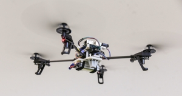
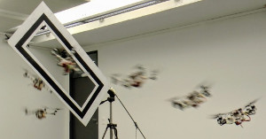

Davide Falanga
- PhD Student in Robotics
Robotics and Perception Group
University of Zurich
Andreasstrasse 15
8050 Zurich
About Me
I am currently pursuing a Ph.D. in motion planning and control for Micro Aerial Vechiles, under the supervision of Prof. Davide Scaramuzza at the Robotics and Perception Group. My background is in Robotics and Control Systems, as I got a B.Sc. and a M.Sc in Automation Engineering from University of Naples “Federico II”, with focus on dynamical systems, robotics and control.
I am interested in building autonomous, intelligent machines able to navigate by themselves using only onboard sensing and computing. I believe that autonomous robots have the potential to remarkably change and improve our society. My research interests lie at the intersection between perception and action. More specifically, I am investigating techniques to exploit motion planning and control to cope with the limitations of onboard sensors for high-speed flight with small-scale, lightweight, vision-based autonomous quadrotors. Check out my publications for further details.
Drop me an email at falanga@ifi.uzh.ch if you want to get in touch, or check out my profiles on LinkedIn and Google Scholar.
Education
-
Ph.D. in Robotics - University of Zurich
[2015-Present] Motion Planning and Control for Vision-based Micro Aerial Vehicles. -
M.Sc. in Automation Engineering - University of Naples “Federico II”
[2012-2015] Robotics, Systems and Control - Summa cum Laude. -
B.Sc. in Automation Engineering - University of Naples “Federico II”
[2008-2012] Dynamical Systems and Control.
Publications
Peer-reviewed Journal Papers
-

M. Faessler, D. Falanga, D. Scaramuzza
Thrust Mixing, Saturation, and Body-Rate Control for Accurate Aggressive Quadrotor Flight
IEEE Robotics and Automation Letters (RA-L), 2017
[PDF] [Video] [PPT] [Code] [BibTex] -
S. Kim, D. Falanga, D. Scaramuzza
Computing The Forward Reachable Set for a Multirotor Under First-Order Aerodynamic Effects
IEEE Robotics and Automation Letters (RA-L), 2018
[PDF] [BibTex]
Peer-reviewed Conference Papers
- 
D. Falanga, E. Mueggler, M. Faessler, D. Scaramuzza
Aggressive Quadrotor Flight through Narrow Gaps with Onboard Sensing and Computing using Active Vision
IEEE International Conference on Robotics and Automation (ICRA), Singapore, 2017
[PDF] [Video] [PPT] [BibTex]  P. Foehn, D. Falanga, N. Kuppuswamy, R. Tedrake, D. Scaramuzza
P. Foehn, D. Falanga, N. Kuppuswamy, R. Tedrake, D. Scaramuzza
Fast Trajectory Optimization for Agile Quadrotor Maneuvers with a Cable-Suspended Payload
Robotics: Science and Systems (RSS), Boston, 2017 Best Student Paper Award Finalist
[PDF] [Video] [PPT] [BibTex]-
D. Falanga, A. Zanchettin, A. Simovic, J. Delmerico, D. Scaramuzza
Vision-based Autonomous Quadrotor Landing on a Moving Platform
IEEE/RSJ International Symposium on Safety, Security and Rescue Robotics (SSRR), Shanghai, 2017
[PDF] [Video] [PPT] [BibTex] -
R. Spica, D. Falanga, E. Cristofalo, E. Montijano, D. Scaramuzza, M. Schwager
A Game Theoretic Approach to Autonomous Two-Player Drone Racing
Robotics: Science and Systems (RSS), Pittsburgh, 2018
[PDF] [Video] [BibTex] -
D. Falanga, P. Foehn, P. Lu, D. Scaramuzza
PAMPC: Perception-Aware Model Predictive Control for Quadrotors
IEEE/RSJ International Conference on Intelligent Robots and Systems (IROS), Madrid, 2018
[PDF] [Video] [Code] [BibTex]